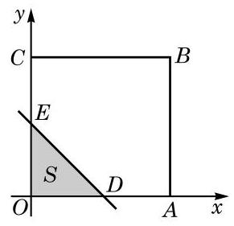
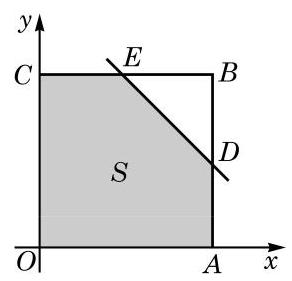
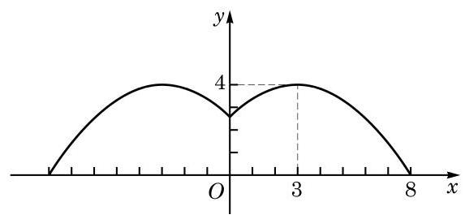
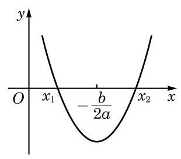

例题 1
例 1 如图 5-3-1，一个边长为 、（）的长方形被分别平行于长与宽的两条直线所分割，试用解析法将图中阴影部分的总面积 表示为 的函数。
教师整合版 / 沪教版高中数学
必修第一册
第5章函数的概念、性质及应用 · 保留教材主线与原题
教材与正式教参整合
例 1 如图 5-3-1，一个边长为 、（）的长方形被分别平行于长与宽的两条直线所分割，试用解析法将图中阴影部分的总面积 表示为 的函数。
例 2 如图 5-3-2，四边形 是平面直角坐标系中边长为 1 的正方形。一直线 （）与正方形 相交，将正方形分为两个部分，其中包含原点 的部分的面积记为 。试将 表示为 的函数。
解 是直线 在 轴上的截距。

图 5-3-3
情形一：当 时，设该直线与线段 交于点 ，并与线段 交于点 ，如图 5-3-3 所示。
此时，包含点 的部分是直角三角形 。由于 ，因此

图 5-3-4
情形二：当 时，设该直线与线段 交于点 ，并与线段 交于点 ，如图 5-3-4 所示。
此时，包含点 的部分是五边形 ，它可以看成是正方形 除去直角三角形 所得的部分，由于 ，因此
综上所述，可以分段表示 关于 的函数如下：
当我们用数学方法解决实际问题时，首先要把问题中的有关变量及其关系表示出来，这显示了建立变量之间的函数关系的重要性。
例 3 要建造一面靠墙、且面积相同的两间相邻的长方形居室，如图 5-3-5 所示。如果已有材料可建成的围墙总长度为 ，那么当宽 （单位：m）为多少时，才能使所建造的居室总面积最大？居室的最大总面积是多少？

图 5-3-5
例 4 某小区要建造一个直径为 的圆形喷水池，并在池的周边靠近水面的位置安装一圈喷水头，使喷出的水柱在离池中心 的地方达到最高高度 。各方向喷来的水柱在池中心上方某一点汇合，求该点离水面的高度。
解 过水池的中心任取一个竖直截面，如图 5-3-6 所示。根据力学的原理，喷出的水珠轨迹应为一条抛物线，此抛物线上任何一个点距池中心的水平距离与其所处的高度之间是对应的。为了建立水平距离 （单位：m）与离水面的高度 （单位：m）之间的函数关系 ，建立如图 5-3-6 所示的直角坐标系。

图 5-3-6
设图中右半部分的曲线所对应的函数表达式为
其中点 是此抛物线的顶点。由题意，可得 。
又由 ，解得 。
这样，该汇合点离水面的高度应为

(第 2 题)
我们知道：一元一次方程总可以化简为 的形式，而一元二次方程总可以化简为 的形式。一般地，在求解含有一个未知数的方程时，经过适当地化简，总可以化为在一定的范围 内求解形如 的方程，这里 ， 是一个函数。
在学习了函数及其性质之后，我们可用函数的观点来考察方程 的求解。
定义 对于函数 ，如果存在实数 ，使得
函数 的零点，就是方程 在集合 中的解，也是该函数 的图像与 轴的交点的横坐标。这就将方程 的求解与求函数 的零点联系起来。
例 5 方程 是否有整数解？说明理由。
解 记 。
对任意给定的 、，当 时，根据不等式的性质，可得 ，并且 ，因此 ，故函数 在其定义域上是一个严格增函数。
经计算，得
由单调性可知，当 ，且 时，；而当 ，且 时，。
因此，任一整数一定不是函数 的零点，从而方程 没有整数解。
从上述解答的过程中可以看到，原先在解方程时，我们的观点是静态的，而一旦引入函数的观点，就可以利用函数的性质尝试用动态的观点审视方程的求解了。
在必修课程第 2 章中，我们已经学过解一元二次不等式。现在我们同样可以用函数的观点来审视一元二次不等式的求解。
我们在必修课程第 2 章中已经知道，对于一元二次不等式
可先考察它对应的方程 ，而该方程的解集可能有两个元素，可能只有一个元素，也可能为空集。
这个图像可以帮助我们回忆二次函数的单调性。根据本章 5.2 节中关于二次函数单调性的结论，函数 在区间 上是严格减函数，而在区间 上是严格增函数。

图 5-3-7
记 。当 时，该方程的解集可记为 ，其中 。此时函数 的大致图像如图 5-3-7 所示。
此外， 及 是该函数的两个零点；在图像上， 及 是相应抛物线与 轴的交点的横坐标，且 。
这样，求解不等式 ，就是要求函数 的图像上位于 部分的所有点的横坐标。因此，根据单调性及零点的位置，参照函数的图像，可以很容易地得到不等式 的解集为 。由此可见，借助于构造一个与不等式有关的函数，如果这个函数的单调性与零点比较容易确定，就可以较便捷地求解相应的不等式。
这样，可将二次项系数为正的一元二次不等式的解集总结如下。
表 5-2 二次项系数 时，二次不等式与相应二次函数的联系
| 零点 | 、（） | 不存在 | |
| 的解集 | |||
| 的解集 |
例 6 用函数的观点在区间 上解不等式 。
解 记 。
对任意给定的 、，当 时，有 ，故
因此， 在区间 上是严格增函数。
由函数 的单调性，并注意到 ，可知在区间 上， 当且仅当 。
因此，在区间 上不等式 的解集为 。
在建立了函数关系后，常常会遇到一些解方程的问题。如果相应的函数是一次函数或者二次函数，就可以用已经学习过的求根公式来求解。但是遇到一些更复杂的函数，相应的方程如何求解呢？此时，要求得问题的精确解答，通常是做不到的，而基于实际问题的需要，往往只要求得具有足够精度的近似解就可以了。本课我们将利用上一节课的思想，将求方程的近似解的问题转化为求函数的近似零点的问题，再利用函数的性质来求得方程的近似解。
我们来看一个例子：在一块边长为 的正方形金属薄片的四个角上都剪去一个边长为 的小正方形，做成一个容积是 的无盖长方体盒子，如图 5-3-8 所示（图中单位：cm）。问： 是多少？（结果精确到 ）

图 5-3-8
根据要求，得 ，我们的目标就是求该方程在区间 上的实根。
令 。上述方程的实根就是函数 的零点，先用描点法作出该函数的大致图像如下：

图 5-3-9
从图像上可以看出，函数 在区间 和区间 上各有一个零点。
定理 如果在区间 上，函数 的图像是一段连续曲线，并且 ，那么 在区间 上一定有零点。
下面用二分法寻求该函数在区间 上的零点的近似值。
二分法的思想非常直接和简单：在确定了区间 上一定有零点的前提下，将区间一分为二，这两部分中总有一个含有零点，而含有零点的区间的长度变为原先的一半。反复执行这种"一分为二"的操作，就能将零点限制在一个足够小的区间中，从而容易求得其近似值了。
因为 ，所以此函数 在区间 上至少有一个有零点。
取 的中点 ，计算可得 。因为 ，所以 在区间 上一定有零点。
将这一步骤重复若干次，见表 5-3：
表 5-3 用二分法求函数零点的一个例子
| 步骤 | （左端点） | （中点） | （右端点） | |||
|---|---|---|---|---|---|---|
| 1 | 3 | 3.5 | 4 | + | - | - |
| 2 | 3 | 3.25 | 3.5 | + | - | - |
| 3 | 3 | 3.125 | 3.25 | + | + | - |
| 4 | 3.125 | 3.1875 | 3.25 | + | - | - |
| 5 | 3.125 | 3.15625 | 3.1875 | + | + | - |
注意到区间 (3.15625, 3.1875) 中的所有数精确到 0.1 时的近似值都是 3.2，所以 在区间 上零点的近似值是 3.2。
按同样的操作方法，可以求得 在区间 上的零点近似值是 1.3。
综上所述，上述问题中所剪去的小正方形的边长约是 或 。
可以看到，在二分法的实际操作中，从第二步起，每一步只需要计算一个函数值，并判断它的符号，同时，所考虑的区间长度减半。
我们学过的一次函数、二次函数、反比例函数、幂函数、指数函数、对数函数以及必修课程第 7 章将要学习的三角函数等，在包含于定义域的任一区间上，图像都是连续的曲线。
二分法的这些步骤中，每一步都是明确的。尽管每一步的计算可能不一定简单，而且可能需要重复较多的步骤才能得到具有足够精度的零点近似值，但根据这一算法不断重复同一类计算的特点，可利用计算机强大的计算功能，通过编制计算机程序，很高效地求出零点的近似值。
有兴趣的同学可以设计一个二分法求函数零点的程序。
| /季度 | 1 | 2 | 3 | 4 |
|---|---|---|---|---|
| /万台 | 10 | 12 | 14 | 16 |
试写出该函数的定义域，并作出其大致图像。
3.4.
4.0.5.
(1) 试把船每小时使用的燃料费用 （单位：元）表示成船速 （单位：海里/时）的函数；
(2) 试把船从甲地到乙地所需的总费用 （单位：元）表示成船速 （单位：海里/时）的函数；
(3) 当船速为多少时，船从甲地到乙地所需的总费用最少？
(1) 试作出票价 （单位：元）关于路程 （单位：km）的函数的大致图像；
(2) 某人买了 5 元的车票，他乘车的路程不能超过多少？
当 时, 在区间 上是严格减函数,而 在区间 上是严格增函数,且当 时, 与 的函数值相等: . 因此,当 时, ,而当 时, .
综上所述,该不等式的解集为 .